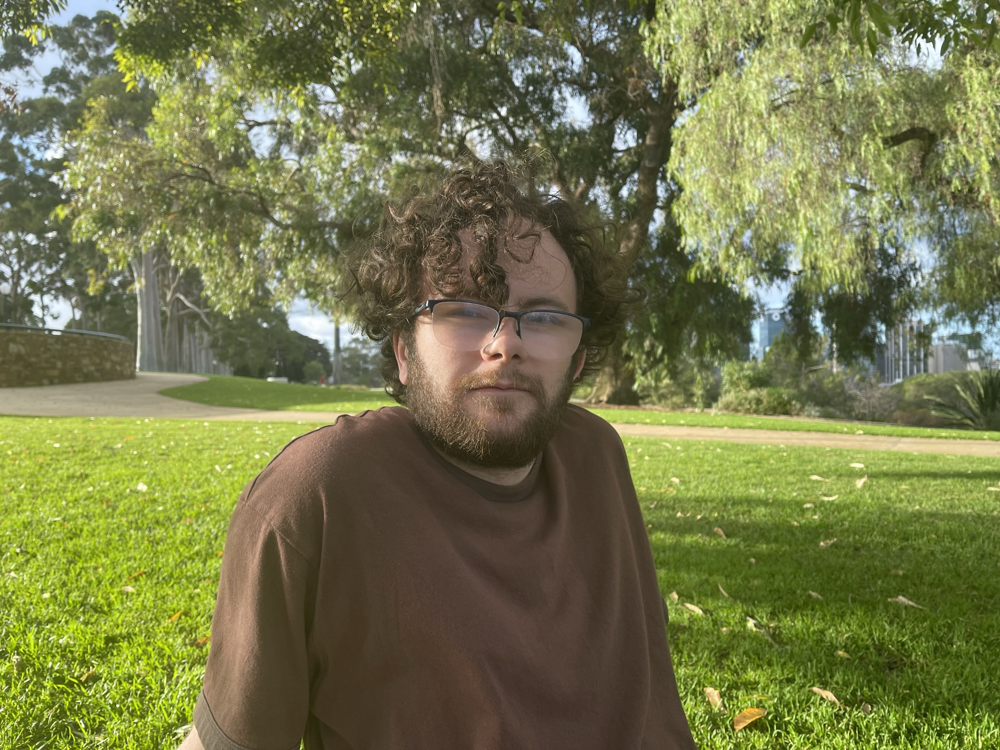
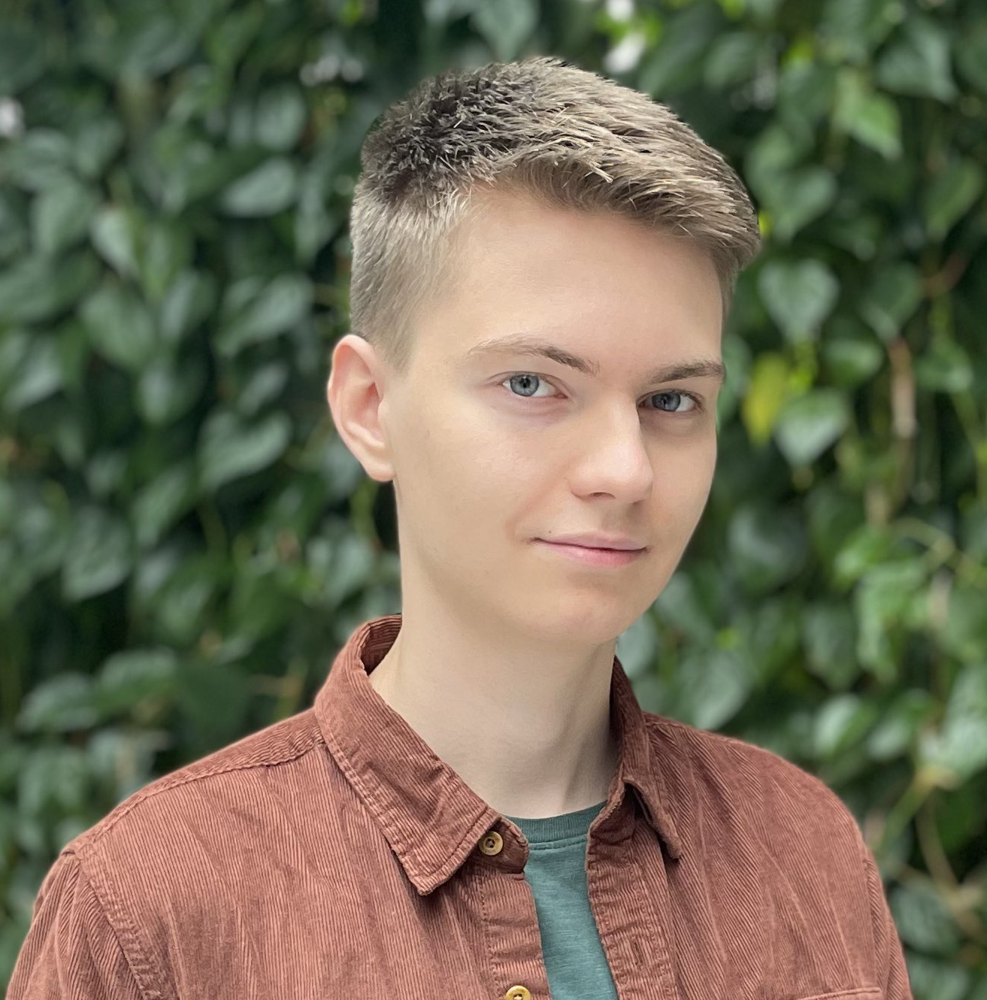
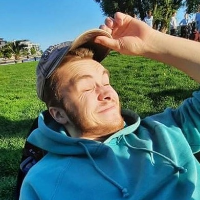

Jeg er en 23 år gammel sørlending med stor interesse for teknologi, bil og båt. På fritiden liker jeg å kjøre bil og båt samt lære meg nye ting innenfor teknologi. Jeg er en fast- og retnings-bestemt person som setter klare mål for livet.
Mine ferdigheter kommer sterkest fram innenfor nettsikkerhet, backend samt design. Min sterke side er at jeg gjennomfører alltid det jeg bestemmer meg for samt løfter jeg gir.
Jeg kommer hovedsaklig til å fokuserer på ledelse samt det å sikre en velfungerende gruppe. I henhold til prosjekter strekkes jeg over det meste av fagfelt.
IS-310 | Gruppe 22
Her i gruppe 22 er vi fire medlemmer som jobber godt sammen for å gi hverandre gode opplevelser, god stemning, og et godt læringsutbytte fra studiet.
Flere av oss er flittige og velkjent med koding, med et greit nivå av kunnskap og erfaring innen frontend- og backend-utvikling.
Vi har også planer om potensielle og mulige bedrifter å kontakte for prosjekter å jobbe med.
Vi ser positivt på dette semesteret sine muligheter, og har høye forhåpninger til oss selv.

Eirik S. Bjørdal
Utvikler
Jeg er en 22 år gammel utvikler med en sterk interesse for teknologi og data. Jeg jobber med bachelorgrad i IT og informasjonssystemer på Universitetet i Agder og har opparbeidet meg solid kompetanse innen C#, .Net, Python, TypeScript, MariaDB, PostgreDB, Nextjs, React, Java og Go.
I tillegg til å være en dyktig utvikler, er jeg også en nysgjerrig og lærevillig person som alltid ønsker å lære mer og utvide mine kunnskaper.
Min oppgave i teamet blir å utvikle og designe nettsiden, samt å bidra med min kompetanse innenfor webutvikling.
Min oppgave i teamet blir å utvikle og designe nettsiden, samt å bidra med min kompetanse innenfor webutvikling.

Lars Henrik Råkil
Utvikler | Redaktør | HR ansvarlig
Hei, Henrik her! Jeg er interessert i et bredt spekter av teknologi på tvers av systemer. På fritiden er jeg interessert i programmering, 3D modellering, design, bilde og videoredigering.
Jeg er svært lærevillig og er god til å henvende meg nye egenskaper.
Jeg kommer til å bidra med både design og utvikling på frontend siden, og kommer også til å assisterende med backend.
Jeg kommer til å bidra med både design og utvikling på frontend siden, og kommer også til å assisterende med backend.

Glenn Joakim Bakklund
Utvikler | Nestleder
Jeg er en positiv og munter student innen IT. Mine fritidsinteresser er dataspill, musikk, og tegne, og bygger iblant modeller.
Når det gjelder arbeid har jeg gode ferdigheter innen koding og design, og står på for å få ting gjort innen arbeidsfrister.
Jeg har mye fokus på å gjøre ting ordentlig så langt det lar seg gjøre, og prøver å være vel-informert når jeg kan. Jeg kan være spontan om jeg bare får tenkt meg om.
Jeg har mye fokus på å gjøre ting ordentlig så langt det lar seg gjøre, og prøver å være vel-informert når jeg kan. Jeg kan være spontan om jeg bare får tenkt meg om.